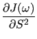

Next: The original model-free Hessian Up: Model-free analysis Previous: The model-free equations Contents Index
The model-free gradient of the original spectral density function (14.62) is the vector of partial derivatives of the function with respect to the geometric parameter
 , the orientational parameter
, the orientational parameter
 , the order parameter S2, and the internal correlation time τe.
The positions in the vector correspond to the model parameters which are being optimised.
, the order parameter S2, and the internal correlation time τe.
The positions in the vector correspond to the model parameters which are being optimised.
The partial derivative of (14.62) with respect to the geometric parameter
 is
is

The partial derivative of (14.62) with respect to the orientational parameter
 is
is
 = =  + +  |
(14.63) |
The partial derivative of (14.62) with respect to the order parameter S2 is
 =  - - |
(14.64) |
The partial derivative of (14.62) with respect to the correlation time τe is
 = = |
(14.65) |